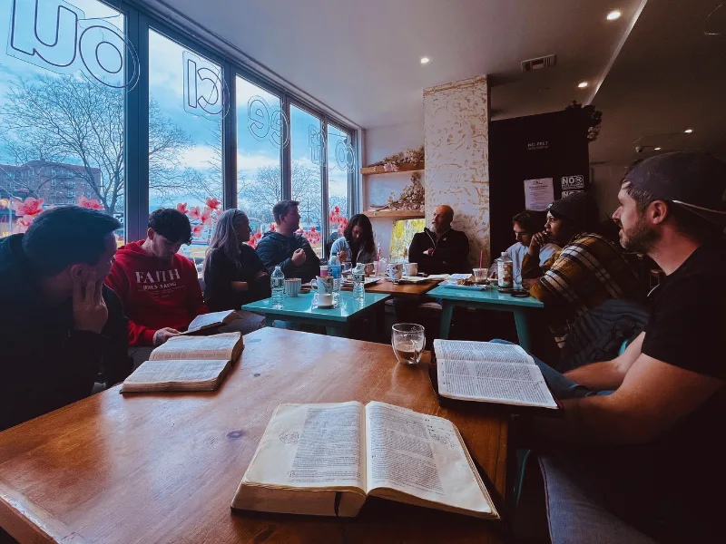

01 · What happens
See real rhythms in normal places.
You walk into real places where disciple-making is being practiced: a coffee shop, a home, a workplace, or a neighborhood space. Not a demo. Not a role play. You’re a guest in someone’s actual rhythm.